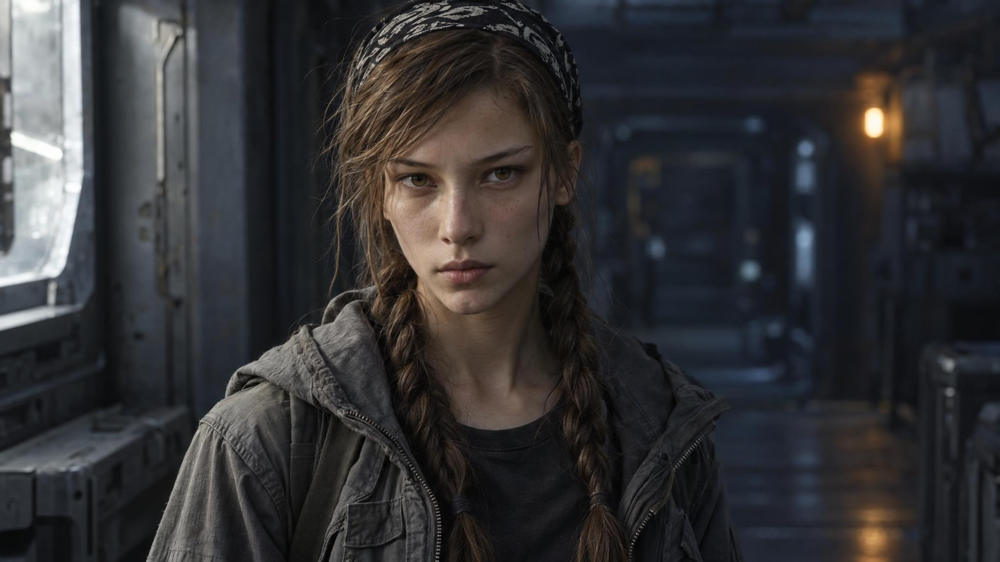
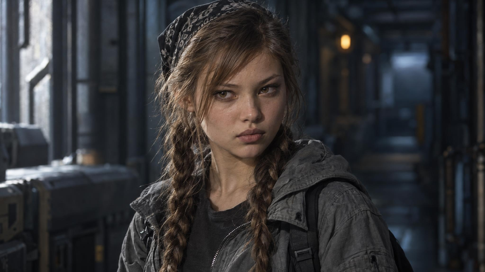
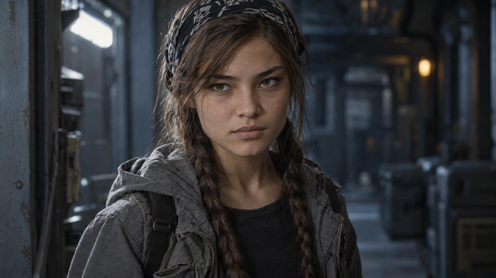
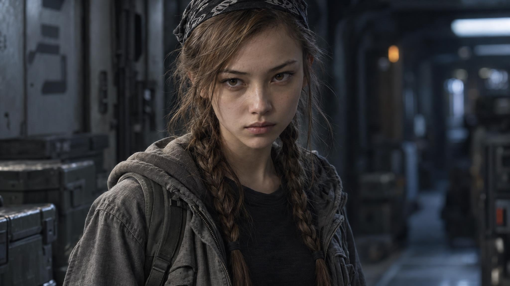
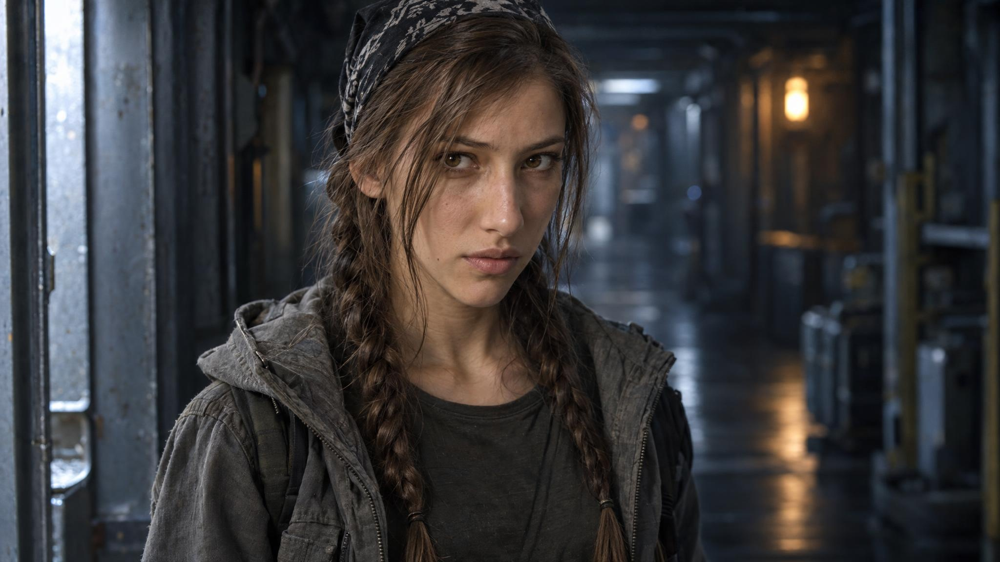
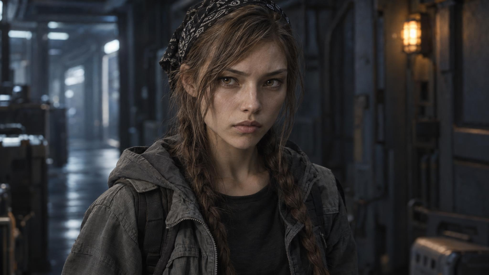
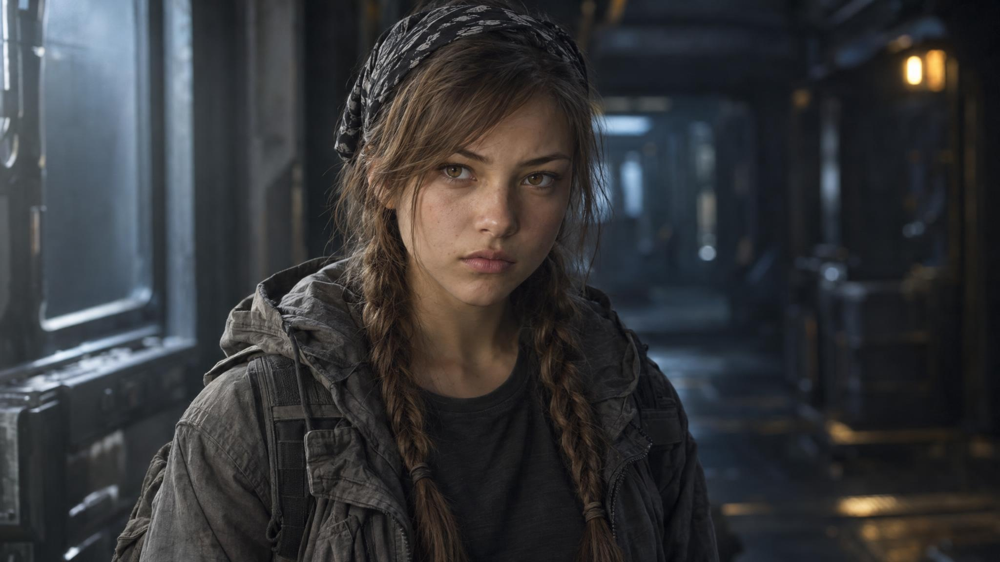

Узкое угловатое лицо
Задание: Очень узкое вытянутое лицо с отчётливой костной архитектурой. Высокие угловатые скулы, узкая нижняя челюсть и небольшой острый подбородок. Нос длиннее среднего, узкий и совершенно прямой. Рот небольшой, губы тонкие. Глаза глубоко посажены, вытянуты по горизонтали, наружные уголки слегка приподняты. Светлая кожа с прохладным подтоном. Юность и естественная красота сохраняются, не делать взрослую иссушенную женщину.


Компактное округлое лицо
Задание: Короткое компактное лицо с мягким округлым контуром, небольшими естественно округлыми щеками на худом теле и узким подбородком. Скулы невысокие и мягко обозначенные. Нос короткий, небольшой, кончик едва вздёрнут. Рот небольшой, губы естественно полнее среднего, без косметического увеличения. Глаза широко расставлены и заметно вытянуты, наружные уголки слегка вверх; НЕ круглые детские глаза. Тёплая светлая кожа. Контраст мягкой анатомии и резкого взгляда; возраст почти семнадцать, не ребёнок.


Широкая челюсть
Задание: Широкое короткое почти квадратное лицо при худой фигуре. Выраженные углы небольшой нижней челюсти, широкий подбородок с округлым краем, широкие умеренно высокие скулы. Прямой короткий нос с более широким основанием. Рот широкий, губы тонкие и почти горизонтальные. Брови прямые, густые, но естественные; глаза узкие миндалевидные с приподнятыми внешними уголками. Слегка оливковый тон кожи. Крепкая индивидуальная геометрия лица без утяжеления тела и без взрослой грубости.


Сердцевидное лицо
Задание: Отчётливо сердцевидное лицо: широкий высокий лоб, заметные височные области, резкое сужение от скул к маленькому тонкому подбородку. Челюсть очень узкая и лёгкая. Нос маленький, переносица невысокая, кончик округлый. Губы тонкие, хорошо очерченный изгиб верхней губы. Длинные узкие раскосые глаза с немного нависающим верхним веком, тёмные тонкие брови. Очень светлая естественная кожа, без фарфоровой ретуши. Красота хрупкая, но взгляд жёсткий и оценивающий.


Выразительный нос
Задание: Длинное овальное лицо, спокойная плавная линия челюсти и удлинённый округлый подбородок. Главная индивидуальная черта — заметный длинный нос с очень небольшой естественной горбинкой и чуть опущенным кончиком. Не карикатура. Рот широкий, нижняя губа умеренно полная, верхняя тоньше. Скулы не выступают резко. Узкие длинные миндалевидные глаза, внешние уголки чуть приподняты, взгляд прямой. Средний светлый тон кожи с тёплым подтоном. Необычная запоминающаяся юная красота, не стандартное рекламное лицо.


Ромбовидное лицо
Задание: Лицо отчётливо ромбовидное: лоб сравнительно узкий, очень широкие высокие выступающие скулы образуют самую широкую часть лица, дальше резкое сужение к короткому аккуратному подбородку. Средняя часть лица короткая. Нос средней длины, узкая высокая переносица и чёткий кончик. Губы средней полноты, рот достаточно широкий и ровный. Выраженно удлинённые раскосые глаза обычного размера, глубокие верхние веки. Светлая кожа нейтрального тона. Скульптурная, почти кошачья геометрия без избыточного истощения.


Широкий мягкий овал
Задание: Широкое мягкое овальное лицо с низко расположенными плавными скулами, сравнительно широкой средней частью и небольшим округлым подбородком. Невысокий лоб. Нос средней длины, широкая низкая переносица, прямое сплошное основание и округлый кончик. Губы средней полноты, верхняя и нижняя почти равны. Очень длинные узкие раскосые глаза с небольшой вертикальной раскрытостью, верхние веки гладкие; наружные уголки приподняты. Светлая оливково-бежевая кожа. Юная естественная красота без кукольных пропорций.